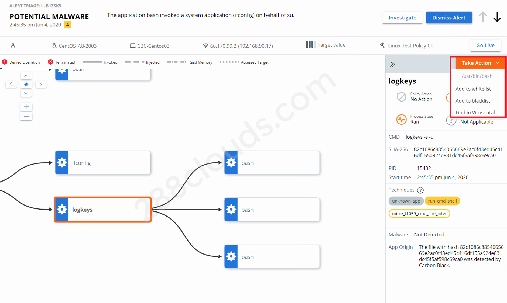

CBC Endpoint Detection Demo with Logkeys

Contents
Carbon Black Cloud (CBC) can detect if an application on the company blacklist is running then send an alert and deny/terminate the process. Let’s setup a demo using Logkeys, a linux application that stores keystrokes with or without the knowledge of user, to see how CBC reacts.
Prerequisites
- Carbon Black Cloud access (Note: the environment I’m using is Carbon Black Cloud Enterprise)
- A linux machine (Note: I’m using CentOS 7) - should have administrator/root access
- CBC sensor installed and active on the linux machine
Process Overview
- Install logkeys on the linux machine.
- Investigate logkeys and add it to the company blacklist.
- Verify that CBC denies logkeys process from running.
Demo / Example
Install Logkeys
- Log into the linux machine where you want to install logkeys.
- Install logkeys using terminal / command line.
|
|
- (Optional) Setup keymap:
locale-genfor Ubuntu orlocaledeffor CentOS. To check system locale and keymap, uselocalectl status. - (Optional) View logkeys options:
logkeys --help.
Use Logkeys
- As a root user, start logkeys:
sudo logkeys -s -u. - Type a bunch of random commands to test if logkeys is working (i.e.
pwd,ls,ss,ifconfig).

- View logkeys output file to see if the commands were recorded:
nano /var/log/logkeys.log. Note that logkeys basically recorded gibberish from my typing because I did not configure keymap on the linux machine.
- To terminate logkeys process:
logkeys -k.


Investigate Logkeys in CBC
- Interestingly, Carbon Black (out of the box) detects logkeys as a potential malware when you run it.
- You can also search for “logkeys” in “Investigate” and see the alert.
- You can view more details of the alert by viewing the alert triage.
- From this view, you can zoom in and click on a process to see more details. You can also take actions like adding the process to whitelist or blacklist.


Configure CBC to Terminate Logkeys
- For this demo, I add logkeys to the company blacklist. You can view the company blacklist by going to Enforce > Reputation.
- I also verify that the policy the linux machine is using terminates applications on the company blacklist when it tries to run.


Verify that CBC Blocks Logkeys
- Now let’s test the policy and make sure that CBC blocks logkeys. Go back to the linux machine and try running logkeys. You’ll see now that logkeys will not run and see that the operation is not permitted.
- If you go to the CBC UI, you will also see some new alerts that show that logkeys has been blocked by the policy and the process has been terminated.
- You can also see that the policy deny action has been taken and an alert has been creatd when you look at recent events.


Credit: Thanks to my colleague, Nikolay Nikolov, for working with me on this demo.